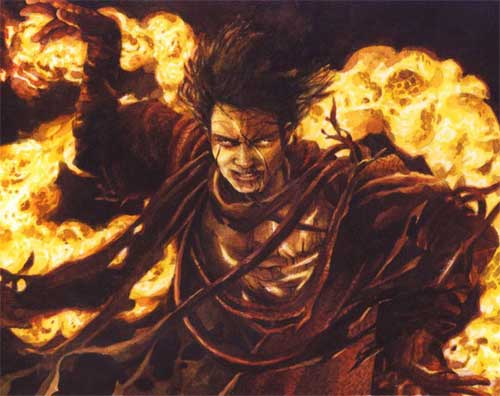

Son
of Doom
I Sons of Doom sono le creature create dall’unione fra succubus e potenti maghi summoner umani che le hanno invocate per avere piacere e favori. Da questo diabolico incrocio nasce, molto raramente, una razza sterile di uomini con poteri demoniaci, in questi casi le madri non potendo portare la prole nella loro dimensione infernale la lasciano nel primo piano materiale alle cure dei padri.

Limiti
di classe per la razza:
Nessuno, si considerano a questi effetti come i normali umani.
Possibilità di multi-classe:
Come gli umani possono divenire solo dual-class
Allineamenti consentiti:
Qualsiasi malvagio
Categorie di età :
Base Age 15 + 1d4
Childhood
1 - 13 years
Adolescence
14 - 17 years
Adulthood
18 -
69 years
Middle Age*
70 - 99 years
Old Age**
100 - 199 years
Venerable Age***
200 + years
Maximum
Age
200 + 2d20 years
Dimensioni e peso :
Si considerano creature Medium.
L’altezza è pari a 147 (125 per le femmine che sono rarissime in quanto quasi sempre scartate nella selezione) + punteggio di costituzione + 3d10 cm. E il loro peso è uguale a 50 (38 per le femmine) + punteggio di costituzione + 2d8 kg.
Punteggi di Abilità :
Bonus: +
1 scelto a sorte tra: 1-2 forza, 3-4 costituzione, 5-6 destrezza
Bonus: +
1 scelto a sorte tra: 1-2
carisma, 3-4 intelligenza, 5-6 saggezza
Malus: nessuno
Per la classe warrior, il bonus di forza straordinaria aumenta al minimo della fascia successiva.
Inoltre i limiti minimi e massimi sono i seguenti :
|
Abilità |
Punteggio Minimo
Razziale |
Punteggio Massimo
Razziale |
|
Forza |
9 |
18 |
|
Intelligenza |
9 |
18 |
|
Saggezza |
9 |
18 |
|
Costituzione |
9 |
18 |
|
Carisma |
9 |
18 |
|
Destrezza |
9 |
18 |
Son of
Doom thieving ability adjustments :
Ability Modifier
Pick Pocket none
Open Lock none
Find/Rem.
Trap
+5%
Move Silently +5%
Hide in Shadows +5%
Detect Noise +5%
Climb Wall none
Read Languages +5%
Abilità
speciali
Hanno una Resistenza alla Magia innata pari al 1d10 % + 2 % per livello di esperienza (è naturale quindi può con il solo pensiero, non conta azione ma va dichiarata nelle iniziative, annullarla completamente per l’intero round in questione. Normalmente la resistenza è, invece, attiva e quindi non può essere annullata qualora il personaggio non è in grado di pensare correttamente, come se è in coma, dorme, ecc…).
Una Mutazione
Demoniaca (scelta a sorte)
1) Pelle
Demoniaca (AC 6 naturale)
2) Aura
Demoniaca di Protezione (Tutti gli avversari soffrono una penalità di -1
ai tiri per colpire).
3) Artigli
del Demone (1-4/1-4 attacchi fisici che si considerano come armi dei
mostri).
4) Ali da Demone (Possono essere usate solo se il personaggio non è ingombrato. Il personaggio può volare a fattore movimento 4 (manovrabilità B). Costui potrà mantenere il volo per un numero di round pari ad 1/3 per eccesso del proprio punteggio di costituzione, oltre tale limite costui qualora continui a volare accumulerà 1 punto fatica per ogni round successivo. Dopo che è atterrato, smettendo di volare per almeno 1 turno, potrà ricominciare a volare con le suddette regole. Tali ali però impongono al personaggio di utilizzare corazze create appositamente per lui (+30% del costo, +20% del tempo di costruzione, in alternativa possono essere modificate corazze già esistenti pagando il 30% del loro costo e tempo di costruzione). Non possono però prendere il volo anche se sono solo leggermente ingombrati. Inoltre la caratteristica del loro volo non permette loro di utilizzare efficacemente armi da tiro.
5) Occhi
Demoniaci di colore rosso fuoco senza pupilla che si vedono al buio (Infravisione
a 18 metri).
6) Velocità
Demoniaca (Il fattore movimento base del personaggio è pari a 15)
Un'Immunità
Demoniaca (scelta a sorte)
1) Vetriolic
Blood (½ danni da acido)
2) Electric
Assorbtion (½ danni da elettricità)
3) Ice
Tollerance (½ danni da freddo)
4) Inferno
(½ danni da fuoco o calore)
5) Poisonous
Blood (+4 ai tiri salvezza contro veleno)
6) Mente
Diabolica (+4 ai tiri salvezza contro incantesimi mentali)
Due
abilità magiche (ognuna usabile singolarmente 1 volta al giorno).
Entrambe appartengono
alla medesima scuola di magia (scelta a sorte):
1d10)
1
Abjuration 2 Alteration 3 Conjuration/Summoning
4 Divination 5 Enchantment
6
Charm 7 Evocation 8 Necromancy
9 Illusion 10 Libera scelta del personaggio.
Poi occorre tirare due
volte per selezionare il livello di potere con 1d10:
(1-6) 1° livello di potere, (7-9) 2° livello
di potere, (10) 3° livello di potere) e poi deve
tirarsi 1d4 per il grado di difficoltà della
magia. A questo punto il personaggio potrà scegliere all’interno di quel
livello di potere e grado una magia a sua scelta che potrà usare 1 volta al
giorno. Dovrà lanciare normalmente le magie e procurarsi i componenti materiali
se richiesti con l’unica eccezione che tali magie possono essere lanciate
anche indossando una armatura, tutte le altre regole sul casting dovranno però
essere seguite. Gli incantesimi si considerano lanciati come un mago dello
stesso livello del personaggio.
Colore degli occhi (tranne se presente la mutazione occhi demoniaci)
01- 50 Rossi con le pupille
51- 90 Normali colori umani
91 – 97 Viola con le pupille
98 – 100 Neri senza pupille
Colori dei capelli
01 – 15 Totalmente Bianchi
16 – 30 Grigio Fumo
31 – 45 Rosso Fuoco
46 – 60 Nero Corvino
61- 100 Normali colori umani
I Son of Doom devono raggiungere un ammontare di punti esperienza pari al 154% di quelli che dovrebbero normalmente raggiungere per la classe scelta.